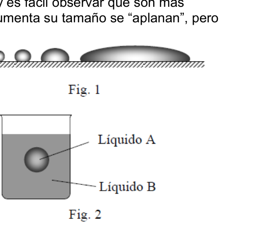
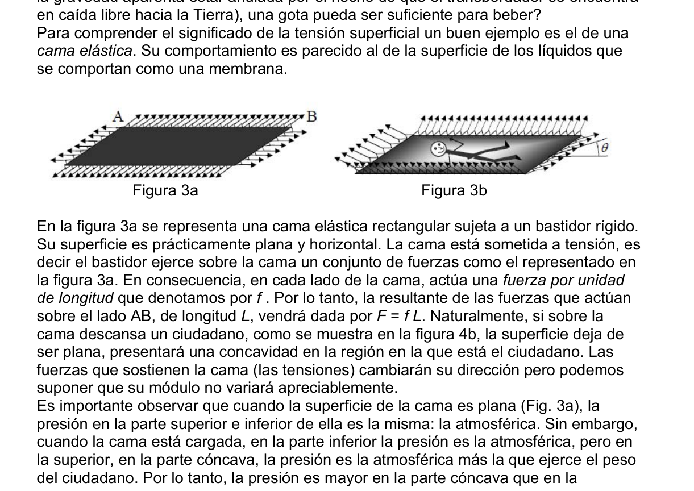
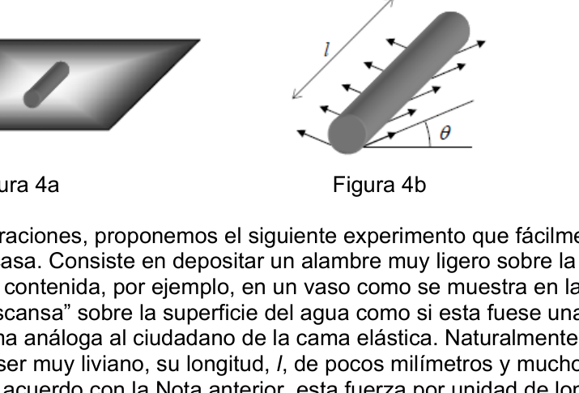
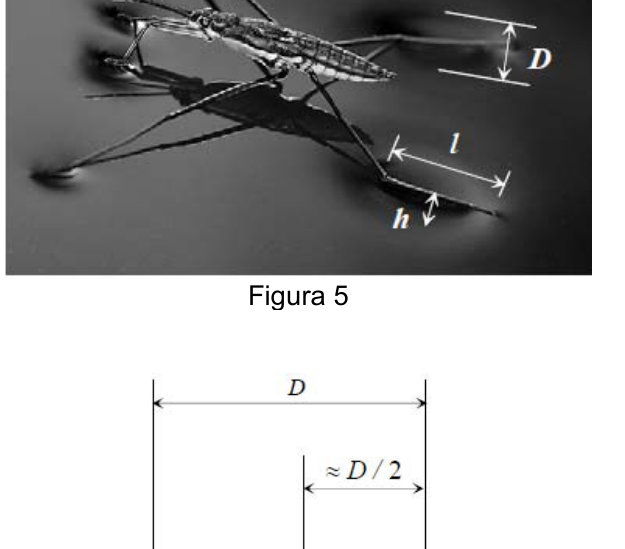

Surface Tension Mercury Drops Insect
PT86. Vicente López, Buenos Aires. Azul. Un método original para pesar a un insecto. Una definición elemental de líquido es: Los líquidos, a diferencia de los sólidos, no tienen una forma definida, adoptan la del recipiente que los contiene. Sin embargo, existen múltiples observaciones que contradicen lo anterior. Por ejemplo, si sobre una superficie horizontal de vidrio limpio se depositan pequeñas cantidades de mercurio, se forman gotas como se muestra en la figura 1, y es fácil observar que son más esféricas cuanto más pequeñas. A medida que aumenta su tamaño se “aplanan”, pero sus bordes siempre están redondeados. Este ejemplo pone de manifiesto que existe una tendencia de los líquidos a adoptar la forma esférica a causa de fuerzas superficiales. A ellas se opone la fuerza de gravedad que tiende a “aplanar” las gotas. Otro ejemplo: cuando se introduce un líquido A en otro B que tenga la misma densidad pero que no sea miscible, el empuje de Arquímedes equilibra el peso, y el primer líquido A, que se encuentra en una condición de gravedad aparente nula, adopta una perfecta forma esférica (Figura 2). Estos y otros muchos ejemplos ponen de manifiesto que los líquidos adoptan la forma esférica “cuando se les deja”, esto es, cuando las fuerzas superficiales de cohesión (tensión superficial) predominan sobre las fuerzas de gravedad, lo que ocurre cuando el número de moléculas que ocupan la superficie es del mismo orden o mayor que el de moléculas que forman parte del volumen del líquido. Esto hace que la “escala” de los fenómenos superficiales o capilares sea pequeña en la superficie de la Tierra, donde la gravedad es g = 9,8m/s2 aproximadamente. El Análisis Dimensional nos proporciona la llamada longitud capilar, λc , que sirve para saber cuándo se deben considerar los efectos de la tensión superficial. Cuando una dimensión característica del problema sea mucho mayor que λc , podremos despreciar tranquilamente los efectos de dicha tensión superficial. La longitud capilar viene dada por la siguiente expresión:
donde σ es el coeficiente de tensión superficial del líquido, ρ su densidad y g la aceleración de la gravedad. Nota: Aunque más adelante se da una explicación intuitiva del concepto de tensión superficial, es conveniente indicar que en la superficie de separación de dos fases, generalmente fluidas, aparece una tensión debida a las fuerzas intermoleculares que son diferentes en cada fase. Suele expresarse como una fuerza por unidad de longitud que es equivalente a una energía por unidad de área, por lo que la superficie entre las fases tiende a ser mínima, es decir tiende a adoptar la forma esférica. En el caso de líquido-gas, la tensión superficial se considera como una propiedad del líquido, ya que un cambio en la naturaleza del gas no tiene efecto apreciable sobre ella. Depende de la temperatura y composición de las fases, es independiente de la gravedad y es muy sensible a la presencia de sustancias extrañas en el líquido (tenso activos). Apretando lentamente un cuentagotas lleno de alcohol conseguimos que se desprendan gotas y observaremos que, en promedio, su diámetro es de 2,5 mm aproximadamente. Este valor puede ser considerado como la longitud capilar de este fenómeno.
a) ¿Cuál sería el volumen V de la gota en un ambiente en el que existiese una gravedad residual 10−4 g? Es suficiente para justificar el hecho de que, en ambientes de aparente falta de gravedad como por ejemplo en el transbordador espacial (donde la gravedad aparenta estar anulada por el hecho de que el transbordador se encuentra en caída libre hacia la Tierra), una gota pueda ser suficiente para beber? Para comprender el significado de la tensión superficial un buen ejemplo es el de una cama elástica. Su comportamiento es parecido al de la superficie de los líquidos que se comportan como una membrana.
Figura 3a
Figura 3b
En la figura 3a se representa una cama elástica rectangular sujeta a un bastidor rígido. Su superficie es prácticamente plana y horizontal. La cama está sometida a tensión, es decir el bastidor ejerce sobre la cama un conjunto de fuerzas como el representado en la figura 3a. En consecuencia, en cada lado de la cama, actúa una fuerza por unidad de longitud que denotamos por f . Por lo tanto, la resultante de las fuerzas que actúan sobre el lado AB, de longitud L, vendrá dada por F = f L. Naturalmente, si sobre la cama descansa un ciudadano, como se muestra en la figura 4b, la superficie deja de ser plana, presentará una concavidad en la región en la que está el ciudadano. Las fuerzas que sostienen la cama (las tensiones) cambiarán su dirección pero podemos suponer que su módulo no variará apreciablemente. Es importante observar que cuando la superficie de la cama es plana (Fig. 3a), la presión en la parte superior e inferior de ella es la misma: la atmosférica. Sin embargo, cuando la cama está cargada, en la parte inferior la presión es la atmosférica, pero en la superior, en la parte cóncava, la presión es la atmosférica más la que ejerce el peso del ciudadano. Por lo tanto, la presión es mayor en la parte cóncava que en la convexa. b) Suponga que la cama elástica es cuadrada de lado L, que la masa del ciudadano que está tumbado en ella es M, y que el ángulo que forman las tensiones con la horizontal es θ. Calcule la fuerza por unidad de longitud, f.
Figura 4a Figura 4b
Tras estas consideraciones, proponemos el siguiente experimento que fácilmente se puede realizar en casa. Consiste en depositar un alambre muy ligero sobre la superficie del agua contenida, por ejemplo, en un vaso como se muestra en la figura 4a. El alambre “descansa” sobre la superficie del agua como si esta fuese una membrana, de forma análoga al ciudadano de la cama elástica. Naturalmente, el alambre tiene que ser muy liviano, su longitud, l, de pocos milímetros y mucho mayor que su radio R. De acuerdo con la Nota anterior, esta fuerza por unidad de longitud es el coeficiente de tensión superficial que denotamos por σ. c) Cuando el alambre esté en equilibrio sobre la superficie, obtenga la expresión de su peso W en función de la fuerza por unidad de longitud (tensión superficial) σ , de la
longitud l y del ángulo de contacto θ que forma la superficie con la horizontal. (Figura 4b) Ya que el radio del alambre es R << l, se puede despreciar la acción de la tensión superficial en sus extremos. El gerris lacustris es un insecto muy abundante en charcas, lagunas y en general en aguas dulces remansadas, siendo su nombre vulgar zapatero. Estos animalejos “caminan” sobre el agua, no “nadan” en ella. Cuatro de sus seis patas terminan en una especie de pie en forma de cilindro que es el que se apoya horizontalmente sobre el agua, comportándose como el alambre del ejemplo anterior. Las dos patas delanteras las usa más como “manos” que como “pies”. En una foto, como la de la figura 6, puede apreciarse un zapatero sobre la superficie del agua, deformándola ligeramente en los apoyos, como si de una membrana se tratase.
Figura 5
Figura 6
Sobre la fotografía de la figura 5 se han indicado las dimensiones más relevantes del fenómeno: longitud de sus “pies”: l = 3,0mm ; anchura de la depresión que producen: D =1,5mm y “profundidad” de la depresión: h = 0,5mm . d) Con las aproximaciones que crea convenientes, haga una estimación de la masa m del zapatero. Ayúdese de la figura 6 en la que se muestra el pie visto de frente y considere que el coeficiente de tensión superficial del agua es σ = 7,28.10−2 N/m.




Topic: Fluid Mechanics Metodi: Physical Modeling, Free-Body Diagram Competenze: Physical Reasoning Objects: Droplet Fonte: Testo (PDF) — p.3
Surface Tension Mercury Drops Insect
PT86. Vicente López, Buenos Aires. Blu. Un metodo originale per pesare un insetto. Una definizione elementare di liquido è: i liquidi, a differenza dei solidi, non sono Hanno una forma definita, adottano quella del contenitore che li contiene. Tuttavia, La Commissione ha adottato una decisione che non è stata adottata. Per esempio, se su una La superficie orizzontale di vetro pulito si deposita in piccole quantità di mercurio, si formano gocce come mostrato nella figura 1, e è facile osservare che sono più le sfere più piccole. Quando cresce, si aplanisce, ma I suoi bordi sono sempre rotondi. Questo esempio evidenzia che La tendenza dei liquidi a adottare la forma sferica a causa di Forze superficiali. Si oppone a loro. la forza di gravità che tende a
- Pianificare le gocce. Un altro esempio: quando si introduce un liquido A in un altro B che ha lo stesso densità ma non miscibile, il La spinta di Archimede equilibra il peso, e il primo liquido A, che si si trova in una condizione di gravità apparente zero, adotta una Perfetto forma sferica (Figura 2). Questi e molti altri esempi dimostrano che i liquidi assumono la forma di quando si lasciano, cioè quando le forze superficiali di coesione (Tensione superficiale) dominano le forze di gravità, che si verifica quando il numero di molecole che occupano la superficie è uguale o superiore al di molecole che fanno parte del volume del liquido. Questo fa sì che la scala di i fenomeni superficiali o capillari sono piccoli sulla superficie terrestre, dove la gravità è g = circa 9,8 m/s2. L’analisi dimensionale ci fornisce la cosiddetta lunghezza capillare, λc, che serve per sapere quando si devono considerare gli effetti della tensione superficiale. Quando una Se la dimensione caratteristica del problema è molto maggiore di λc , possiamo disprezzarla . la tensione superficiale. La lunghezza capillare è data dalla seguente espressione:
dove σ è il coefficiente di tensione superficiale del liquido, ρ la sua densità e g la l’accelerazione della gravità. Nota: Anche se più avanti viene data una spiegazione intuitiva del concetto di tensione superficiale, è opportuno indicare che sulla superficie di separazione a due fasi, La tensione si verifica a causa delle forze intermolecolari che sono diverse in ogni fase. È spesso espressa come forza per unità di lunghezza. che è equivalente ad un’energia per unità di area, quindi la superficie tra le Le fasi tendono ad essere minime, cioè tendono ad assumere la forma sferica. Nel caso di liquido-gas, la tensione superficiale è considerata come una proprietà del La variazione della natura del gas non ha alcun effetto apprezzabile su
- Lei. Dipende dalla temperatura e dalla composizione delle fasi, è indipendente dalla gravità e è molto sensibile alla presenza di sostanze strane nel liquido (tenso attività). Prendendo lentamente un’alcolina di liquidi, riusciamo a farla uscire. si scatenano gocce e si noterà che, in media, il loro diametro è di 2,5 mm
- Circa. Questo valore può essere considerato come la lunghezza capillare di questo fenomeno.
a) Qual è il volume V della goccia in un ambiente in cui esiste una gravità residuale 10−4 g? È sufficiente a giustificare il fatto che, in ambienti La gravità è apparentemente insufficiente, come per esempio nel transbordatore spaziale (dove La gravità apparente sarà annullata dal fatto che la nave si trova in caduta libera verso la Terra), un goccio può essere sufficiente per bere? Per capire il significato della tensione superficiale un buon esempio è quello di una
- Un letto a legno. Il suo comportamento è simile a quello della superficie dei liquidi che si comportano come una membrana.
Figura 3a
Figura 3b
La figura 3a rappresenta un letto elastico rettangolare attaccato a una rigida cornice. La sua superficie è praticamente piana e orizzontale. Il letto è sottoposto a tensione, è dire che il corridoio esercita sul letto un insieme di forze come quello rappresentato in figura 3a. Di conseguenza, su ogni lato del letto, agisce una forza per unità di lunghezza che indichiamo per f . Quindi, la risultante delle forze che agiscono sul lato AB, di lunghezza L, sarà dato da F = f L. Naturalmente, se sulla Il letto riposa un cittadino, come mostrato nella figura 4b, la superficie lascia di Se il territorio è piatto, presenta una concavità nella regione in cui si trova il cittadino. Le Le forze che sostengono il letto (le tensioni) cambieranno direzione, ma possiamo. supporre che il modulo non varia appreziatamente. È importante notare che quando la superficie del letto è piana (Fig. 3a), la La pressione in cima e in basso è la stessa: atmosferica. Tuttavia, Quando il letto è carico, in fondo la pressione è atmosferica, ma in La pressione è l’atmosfera più il peso. del cittadino. La pressione è quindi maggiore nella parte concave che nella parte concave. convexa. b) Supponiamo che il letto a lattante sia quadrato sul lato L, che la massa del cittadino che è sdraiato su di essa è M, e che l’angolo che formano le tensioni con la orizzontale è θ. Calcola la forza per unità di lunghezza, f.
Figura 4a Figura 4b
Dopo queste considerazioni, proponiamo il seguente esperimento che può essere facilmente può farlo a casa. Consiste nel depositare un filo molto leggero sulla superficie dell’acqua contenuta, ad esempio, in un bicchiere come mostrato nella figura 4a. Il filo si riposerà sulla superficie dell’acqua come se fosse una La membrana, in modo analogo al cittadino del letto a legno. Naturalmente, il Il filo deve essere molto leggero, il suo lunghezza, l, di pochi millimetri e molto più grande. che la sua radio R. Secondo la nota precedente, questa forza per unità di lunghezza è il coefficiente di tensione superficiale indicato per σ. c) Quando il filo è in equilibrio sulla superficie, si ottiene l’espressione di peso W in funzione della forza per unità di lunghezza (tensione superficiale) σ , di
L’angolo di contatto θ che forma la superficie con l’orizzontale. (Figura 4b) Poiché il raggio del filo è R << l, si può disprezzare l’azione della tensione superficiale ai suoi estremi. Il gerris lacustris è un insetto molto ricco in laghi, laghi e in generale in Acque dolci rimandate, il suo nome è il calzatore. Questi animali piccoli Camminano sulle acque, non ne fanno nuoto. Quattro delle sue sei gambe finiscono in una. specie di piedi in forma di cilindro che è quello che si appoggia orizzontalmente sul l’acqua, comportandosi come il filo dell’esempio precedente. Le due zampe anteriori. Le usa più come mani che come piedi. In una foto, come quella di figura 6, si può La superficie dell’acqua è leggermente distorta. supporti, come se fosse una membrana.
Figura 5
Figura 6
La fotografia di cui alla figura 5 indica le dimensioni più rilevanti del fenomeno: lunghezza dei loro piedi: l = 3,0 mm; larghezza della depressione che producono: D = 1,5 mm e profondità della depressione: h = 0,5 mm . d) Con le approssimative che ritiene convenienti, effettuare una stima della massa m
- Il calzatore. Aiuta la figura 6 che mostra il piede visto di fronte e Considera che il coefficiente di tensione superficiale dell’acqua è σ = 7,28.10−2 N/m.
Topic: Fluid Mechanics Metodi: Physical Modeling, Free-Body Diagram Competenze: Physical Reasoning Objects: Droplet Fonte: Testo (PDF) — p.3
The following is the list of substances that are present in the foodstuffs:
PT86. Vicente Lopez, from Buenos Aires. Blue, please. An original method of weighing an insect. A basic definition of liquid is: Liquids, unlike solids, are not They have a definite shape, they take the shape of the container that contains them. However, There are many observations which contradict this. For example, if about a A clear glass surface is placed on which small amounts of mercury are deposited. They form droplets as shown in Figure 1, and it’s easy to see that they’re more. The smaller the spherical. As it grows in size it becomes more and more large, but Its edges are always rounded. This example shows that There is a tendency for liquids to The shape of the sphere is due to the surface forces. He opposes them . The force of gravity that tends to
- Plan the drops. Another example: when a liquid A in another B having the same density but not to be miscible, the Archimedes’ thrust balances the Weight, and the first liquid A, which is is in a condition of It’s a zero-gravity, and it adopts a The shape of the sphere is perfectly rounded (Figure 2). These and many other examples show that liquids take the form of spherical when left , that is, when the surface forces of cohesion (surface tension) dominate the forces of gravity, which happens when The number of molecules occupying the surface is of the same order or greater than the of molecules that form part of the volume of the liquid. This makes the scale of surface or capillary phenomena are small on the Earth’s surface, where gravity is g = approximately 9.8m/s2. Dimensional analysis gives us the so-called capillary length, λc, which serves to know when to consider the effects of surface tension. When a If the characteristic dimension of the problem is much greater than λc , we can disregard it . The effects of such surface tension are calm. The length of the capillary is given by the following expression:
where σ is the coefficient of surface tension of the liquid, ρ its density and g the acceleration of gravity. Note: Although an intuitive explanation of the concept of voltage is given later surface, it is appropriate to indicate that on the two-phase separation surface, The resulting stresses are usually fluid, and the stresses are due to intermolecular forces that They’re different at every stage. It is usually expressed as a force per unit length which is equivalent to one energy per unit area, so the surface between the two The phases tend to be minimal, i.e. they tend to take the spherical shape. In the case of liquid-gas, surface tension is considered as a property of the The effect of a change in the nature of the gas on the She’s the one. It depends on the temperature and composition of the phases, it is independent of the The presence of foreign substances in the liquid (tense) is very sensitive to the presence of foreign substances in the liquid. (including the assets). Slowly squeezing a dropper full of alcohol we get it. They drop droplets and we’ll see that on average, their diameter is 2.5 mm. about. This value can be considered as the capillary length of this It’s a phenomenon.
(a) What would be the volume V of the drop in an environment where there is a The residual gravity is 10−4 g. It is sufficient to justify the fact that, in environments The first is the fact that the space shuttle is not capable of carrying out any of the following tasks: The gravity seems to be cancelled by the fact that the shuttle is located. (in free fall to Earth), can a drop be enough to drink? To understand the meaning of surface tension a good example is that of a the elastic bed. Their behavior is similar to that of the surface of liquids that They act like a membrane.
Figure 3a
Figure 3b
In Figure 3a a rectangular elastic bed is represented attached to a rigid frame. Its surface is almost flat and horizontal. The bed is under stress, is it? Say the frame exerts on the bed a set of forces like the one represented in the figure 3a. Consequently, on each side of the bed, one force per unit acts. of length we denote by f . Therefore, the resulting forces acting on the AB side, of length L, shall be given by F = f L. Of course, if about the The bed rests a citizen, as shown in Figure 4b, the surface leaves If the area is flat, it will present a concave region in which the citizen is. The The forces that hold the bed (the tensions) will change direction but we can assuming that its module will not vary appreciably. It is important to note that when the surface of the bed is flat (Fig. 3a), la The pressure at the top and bottom of it is the same: atmospheric. However, When the bed is loaded, the bottom pressure is atmospheric, but in The upper part, the concave part, the pressure is the atmospheric plus the weight. The citizen. Therefore, the pressure is higher on the concave part than on the It’s convex. (b) Suppose the elastic bed is square on the L-side, that the mass of the citizen which lies on it is M, and that angle forming the tensions with the The horizontal is θ. Calculate the force per unit length, f.
Figure 4a Figure 4b
After these considerations, we propose the following experiment which can be easily done. You can do it at home. It consists of placing a very light wire over the surface of water contained, for example, in a glass as shown in Figure 4a. The wire rests on the surface of the water as if it were a wire. The length of the bed is equal to the length of the bed. Of course, the Wire has to be very light, its length, l, a few millimeters and much larger. That your radio R. According to the above Note, this force per unit length is The surface tension coefficient we denote by σ. (c) When the wire is in equilibrium on the surface, obtain the expression of its Weight W in terms of force per unit length (surface tension) σ , of the
length l and angle of contact θ forming the surface with the horizontal. (Figure 4b) Since the wire radius is R << l, the action of the voltage can be neglected. superficial at its ends. The gerris lacustris is a very abundant insect in ponds, lagoons and in general in fresh water, the common name of which is shoemaker. These little animals . They walk upon the waters, they swim not in it. Four of its six legs end in one. The cylinder-shaped foot is the one that rests horizontally on the The water, acting as the wire in the previous example. The two front legs . He uses them more like hands than feet. In a photo, like the one in Figure 6, you can The water surface is slightly warped by the shoe. supports, as if it were a membrane.
Figure 5
Figure 6
The most relevant dimensions of the image are shown in Figure 5. phenomenon: length of their legs: l = 3.0 mm; width of the depression they produce: D = 1.5mm and depth of depression: h = 0.5mm . (d) With the approximations you deem appropriate, estimate the mass m The shoemaker. Use Figure 6 to show the foot facing up and Consider that the surface tension coefficient of water is σ = 7,28.10−2 N/m.
Topic: Fluid Mechanics Metodi: Physical Modeling, Free-Body Diagram Competenze: Physical Reasoning Objects: Droplet Fonte: Testo (PDF) — p.3